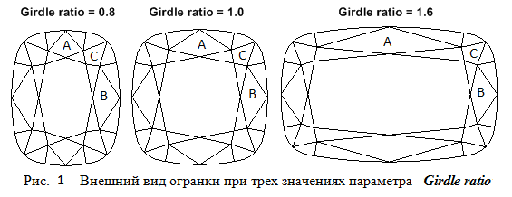

Иногда желательно при изменении размеров площадки огранки соответствующим образом менять размеры сегментов рундиста. При таком подходе к построению огранки она зачастую приобретает более красивый вид чем при независмом делении рундиста на сегменты. По приведенной online-программе можно проследить взаимосвязь короны и рундиста огранки.
При способе построения этой огранки, который мы будем использовать, при изменении удлинения огранки вид рундиста и короны должен меняться таким образом, чтобы форма граней C и B оставалась неизменной, а грань A растягивалась или сжималась вдоль оси OX соответственно с изменением значения удлинения огранки. Для того чтобы выполнить указанное требование построение короны и рундиста огранки должно производиться одновременно – так как их внешний вид является взаимозависимым. Форма огранки при трех различных значениях параметра Girdle ratio показана на рисунке 1.
На рисунке 2 показаны геометрические построения, используемые при расстановке вершин на рундисте и короне. Построение начинается с расчета формы рундиста, которое осуществляется точно таким же образом, как это было сделано в предыдущей главе. Однако расстановка вершин на рундисте делается совершенно иначе.
Первое, что мы для этого сделаем – это построим вспомогательную окружность cir4. Эта окружность поможет найти размеры угловых сегментов рундиста.
Определим сначала положение центра O4 этой окружности. Координаты центра окружности O4 являются одновременно координатами x и y
вершины рундиста 8. При определении значения радиуса окружности cir4 используется значение параметра
dr, которому в СДМ соответствует поле dr. Этот параметр можно использовать для изменения относительных размеров сегментов рундиста.
Зная координаты точек P1, P2, O4, а также значения координат вершин 0 и 1 короны, можно составить уравнения плоскостей,
в которых лежат главные четырехугольные грани короны A, B и C. Уравнения этих плоскостей создаются по трем принадлежащим им точкам.
Ниже приведена та часть исходного кода функции InitGirdle, в которой находятся уравнения плоскостей,
в которых лежат грани A, B и C короны. При нахождении уравнений учитываем, что высота короны h_crown равна величине
h_crown = tan(угол_короны) ∙ (1 – ширина_площадки) / 2
Следующим шагом является определение уравнения линии пересечения плоскостей – с одной стороны плоскостей граней A и C,
а с другой стороны – граней B и C. На рисунке 2 эти линии обозначены как line_AC и line_BC соответственно.
// Главные четырехугольные грани короны // Конструируем плоскость в которой лежит грань A var planeA = new Plane3D(); planeA.CreatePlaneThreePoints(crown[0], new Point3D(0, 0.5, r/2), new Point3D(P1[0], P1[1], h_crown + r/2)); // Конструируем плоскость в которой лежит грань B var planeB = new Plane3D(); planeB.CreatePlaneThreePoints(crown[2], new Point3D(lw/2, 0.0, r/2), new Point3D(P2[0], P2[1], h_crown + r/2)); // Конструируем плоскость в которой лежит грань C var planeC = new Plane3D(); planeC.CreatePlaneThreePoints(new Point3D(P1[0], P1[1], h_crown + r/2), new Point3D(P2[0], P2[1], h_crown + r/2), new Point3D(O4[0], O4[1], r/2)); // Конструируем линию пересечения плоскостей A и C var vector = planeA.VectorIntersectionTwoPlanes(planeC); var vector_AC = new Vector2D(vector[0], vector[1]); vector_AC.Normer(); var line_AC = new Line2D(); line_AC.CreateLineVectorPoint(vector_AC, P1); // Конструируем линию пересечения плоскостей B и C vector = planeB.VectorIntersectionTwoPlanes(planeC); var vector_BC = new Vector2D(vector[0], vector[1]); vector_BC.Normer(); var line_BC = new Line2D(); line_BC.CreateLineVectorPoint(vector_BC, P2);
Далее поступим следующим образом – введем параметр огранки, которому дадим название ratio. В СДМ этому параметру соответствует
одноименное поле ratio. Рассмотрим отрезок соединяющий точки P0 и O4. Будем рассматривать значение ratio как отношение,
в котором оно делит длину отрезка P0 - O4. В результате этого деления получаются два отрезка – P0 - P4 и P4 - O4.
Иными словами значение ratio задает положение точки P4 на отрезке P0 - O4.
Проведем еще одну прямую – line_P4. Она должна проходить через точку P4 и быть параллельной прямой,
проходящей через ранее найденные точки P1 и P2. Следом за этим найдем точки A и B пересечения прямой line_P4
с проекциями на горизонтальную плоскость прямых line_AC и line_BC. Так как эти точки лежат на проекциях прямых line_AC и
line_BC то поэтому их и обозначили как A и B.
Напомним, что по этим прямым пересекаются плоскости, в которых лежат грани короны A, B и C.
Найденные точки A и B будем рассматривать как проекции вершин короны 8 и 9 на горизонтальную плоскость OXY.
Для нахождения высоты, на которой расположены сами трехмерные точки имеющие проекции A и B, проведем через A и B прямые
перпендикулярные к плоскости OXY. Точки пересечения этих прямых с плоскостями, в которых лежат грани короны A и B
и определят координаты по оси OZ вершин короны 8 и 9. Следовательно,
значение параметра ratio определяет положение вершин короны 8 и 9.
Таким образом, мы рассчитали координаты всех вершин короны для одной четверти огранки. Это вершины обозначены числами 0, 1, 2, 8 и 9.
Нажав в online-программе переключатель Cr-Gd-Par можно увидеть нумерацию вершин короны (вершины короны отобразятся красным цветом).
// Точка P4 может двигаться по прямой между точками P0 и O4 var P4 = new Point2D(); P4[0] = P0[0] * ratio + (1 - ratio) * O4[0]; P4[1] = P0[1] * ratio + (1 - ratio) * O4[1]; // Прямая параллельная прямой P1 - P2 и проходящая через точку P4 var line_P4 = new Line2D(); line_P4.CreateLineVectorPoint(new Vector2D(P1[0] - P2[0], P1[1] - P2[1]), P4); // Находим точки пересечения найденной только что прямой line_P4 // с проекциями линий пересечения плоскостей line_AC и line_BC var A = line_AC.IntersectionTwoLines(line_P4); var B = line_BC.IntersectionTwoLines(line_P4); // Конструируем вершины звезды короны var Z1 = new Vector3D(0,0,1); // Вертикально направленный единичный вектор var lineVert_A = new Line3D(); // Вертикальная прямая проходящая через точку A lineVert_A.CreateLineVectorPoint(Z1, new Point3D(A[0], A[1], 0)); crown[8] = lineVert_A.IntersectionLinePlane(planeA); var lineVert_B = new Line3D(); // Вертикальная прямая проходящая через точку B lineVert_B.CreateLineVectorPoint(Z1, new Point3D(B[0], B[1], 0)); crown[9] = lineVert_B.IntersectionLinePlane(planeB);
Определим координаты точек S и V лежащих на границах угловых сегментов рундиста огранки. Для этого проводим одну прямую проходящую через точки O1 и A, а другую прямую – через точки O2 и B. Точки пересечения этих прямых с линией рундиста определят граничные точки угловых сегментов. Координаты x и y точки S соответствует координатам вершины рундиста 4 в горизонтальной плоскости, а координаты x и y точки V соответствует координатам вершины рундиста 12 в горизонтальной плоскости. Таким образом, нами определены координаты всех узловых вершин рундиста 0, 4, 8, 12 и 16 для одной его четверти. Перед этим мы уже нашли координаты вершин 0, 1, 2, 8 и 9 короны. Координаты остальных узловых вершин рундиста и координаты остальных вершин короны можно найти исходя из соображений симметрии огранки относительно плоскостей OXZ и OYZ. Дальнейшие действия по делению каждого из полученных сегментов рундиста на четыре части подобны уже рассмотренным действиям при построении предыдущего рундиста огранки "подушка".
// Вычисляем вершины рундиста со стороны короны
// Прежде всего вычисляем координаты узловых вершин рундиста
girdle[0] = new Point3D();
girdle[0][0] = 0;
girdle[0][1] = 0.5;
girdle[0][2] = r/2;
// Точки s и v определяют границу сегментов рундиста
// Точки лежащие на границе сегментов seg1 и seg2
// и также на границе сегментов seg3 и seg4
// Уравнение прямой проходящей через центр большей окружности O1 и точку A
var line_O1_A = new Line2D(O1, A);
if(!cir1.IntersectionLineCircle(line_O1_A, point1, point2))
{
return null;
}
var s = new Point2D()
if (point1[1] > point2[1])
{
s[0] = point1[0]; s[1] = point1[1];
}
else
{
s[0] = point2[0]; s[1] = point2[1];
}
girdle[4] = new Point3D();
girdle[4][0] = s[0];
girdle[4][1] = s[1];
girdle[4][2] = r/2;
girdle[8] = new Point3D();
girdle[8][0] = O4[0];
girdle[8][1] = O4[1];
girdle[8][2] = r/2;
// Уравнение прямой проходящей через центр меньшей окружности O2 и точку B
var line_O2_B = new Line2D(O2, B);
if(!cir2.IntersectionLineCircle(line_O2_B, point1, point2))
{
return null;
}
var v = new Point2D()
if (point1[0] > point2[0])
{
v[0] = point1[0]; v[1] = point1[1];
}
else
{
v[0] = point2[0]; v[1] = point2[1];
}
girdle[12] = new Point3D();
girdle[12][0] = v[0];
girdle[12][1] = v[1];
girdle[12][2] = r/2;
girdle[16] = new Point3D();
girdle[16][0] = lw/2;
girdle[16][1] = 0;
girdle[16][2] = r/2;
Единственное отличие заключается в том, что, так как положение вершин короны уже определено,
нам следует найти значения координаты z каждой вершины огранки со стороны короны
(раньше при расчете рундиста других моделей огранок, до его корректировки по высоте,
мы полагали его равным значению толщина_рундиста/2).
Для нахождения этих координат мы строим плоскости, в которых лежат грани короны, примыкающие к рундисту,
и протыкаем каждую такую плоскость вертикальными прямыми, исходящими из найденных точек проекций вершин
рундиста на горизонтальную плоскость. Высота, на которой происходит протыкание, определит координату z
соответствующей вершины рундиста лежащей между его узловыми вершинами. Таким образом корректировка вершин рундиста
по высоте со стороны короны входит непосредственно и изначально в расчет рундиста.
Для узловых вершин рундиста высота, на которой они расположены, равна значению толщина_рундиста/2.